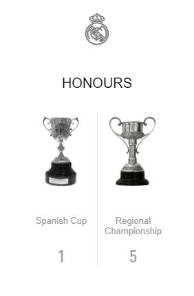

A new sport from England called football started to take a grip of our country. Its quick uptake meant that in the late nineteenth and early twentieth century the first organisations were created for its practice. One of them was the Madrid Football Club, a predecessor of Real Madrid. Julián Palacios was its first figurehead, but it was Juan Padrós who formally constituted the institution (1902). Interest grew at such a rate that Madrid proposed a tournament in homage to king Alfonso XIII. The initiative became the Copa de España.
The figure of Julián Palacios was ever-present in the club's early years. It was he who, in 1900, called a general meeting to decide which players would form Madrid's first team. The Padrós brothers took the reins shortly afterwards. Football was starting to generate a lot of attention and the number of members was growing in leaps and bounds. Its constitution as a company came on the 6th of March 1902, with a board of directors presided by Juan Padrós.
Those visionary directors made a proposal to the mayor of Madrid, Alberto Aguilera; the constitution of the first football tournament. The first competition was established in honour of king Alfonso XIII. Five companies registered for the tournament, which was held in the Hipódromo. It was the beginnings of the Copa de España and of what would become Madrid's hallmark, victory. The Whites won four titles from the first six editions.
A piece of land adjacent to the bullring in Madrid was made into a pitch for the new company's first matches. The Padrós' backroom became the scene of endless football discussions. One man who always had something to say was Arthur Johnson, an English national based in Spain. With the aid of his scrawlings, Mr Johnson demonstrated what he considered to be the ‘keys to playing football correctly'. Almost by accident, the Englishman had become the first coach in the history of Madrid.
Such were the dimensions football was taking on that Carlos Padrós had taken on a new challenge, to organise an international game. Madrid covered all the costs of bringing Gallia Sport from Paris to the capital. The champions of France and Spain head to head. Ninety minutes later in the Hipódromo, the match finished in a one-all draw and the teams set a date for a rematch in the neighbouring country.
At the end of the first decade of the twentieth century, significant problems arose with the Campeonato de España and some companies had begun to bicker. This led to the creation of the Federación Española de Fútbol (1909), whose beginnings were complicated, despite the unanimity of the constituent assembly at the time.
Spanish football was going through a period of difficulty and uncertainty. Real Madrid was not completely unaffected by these problems, but it overcame them thanks to some good work from its directors. With a growing fanbase, they saw the need to change grounds in order to facilitate the number of visitors and obtain more money. The club moved to the O’Donnell Stadium. It was then that the King of Spain's high steward granted Madrid the title ‘Real’ (1920).
It was thought that the constitution of a Federation would be a quick solution to the crisis, but it was not to be. Each company was looking out for its own interests, and while some supported the Federación, others formed another organisation in parallel, the Unión de Clubes. The predominant feeling at Madrid was one of disappointment and disillusion. The board of directors even had to take action to avoid the 'resignation' of the president, Adolfo Meléndez.
The duplication of competitions and interests did nothing to undermine expectations in the world of fútbol. The fans were still turning up to see their team. Madrid, with the move to O’Donnell, had taken its first step towards professionalization. More spectators, more profit and more money to buy players. The new ground was better than that of Villa y Corte, with a capacity of 5,000.
The 1915-1916 season produced a brilliant performance in the Campeonato de España. The team was the runner-up after winning an epic semi-final against Español and losing an equally competitive final against Athletic de Bilbao. The circumstances of that match took their toll and resulted in the resignation of the entire board of directors, with Pedro Parages taking the reins from Adolfo Meléndez. The changes bore fruit, as the next season Madrid was the champion of Spain once more.
In light of the bitter struggle between the Federación and the Unión de Clubes in recent years, king Alfonso XIII decided to intervene. He received the president of the Federación, Juan Padrós, and recognised the organisation as the only representative body of Spanish football. At the same time, he urged the union to “embrace it and forget the bickering”. A reconciliation deal was signed that put Spanish football back on track.
Once the organisational problems had been resolved, things began to return to normal. This is when one of Madrid's legends, Santiago Bernabéu came into the picture. And he did so as a player. He was a stocky forward with a great eye for goal, the man from La Mancha eventually became the team's captain and one of the club's best-known figures. It was a sign of what was to come years later at the helm of the entity.
It had not been a particularly prolific time on the field for Madrid. The expectations generated by the team were not being turned into titles. But that changed in the 1916-1917 season. The Whites, after a meteoric struggle against Europa in the semi-final, faced a final against the almighty Arenas de Guecho. Arthur Johnson's understudies played a spectacular game, winning in extra time to bring the cup back to Madrid.
In the early 20s, Real Madrid returned to its pioneering role in Spanish football. The team made a series of trips abroad, making it an international trailblazer. As a result of the club's growing stature, two more stadium changes were made in this period. First, to the Velódromo de Ciudad Lineal, and then Chamartín was built. The latter hosted the first match in the recently created Campeonato de Liga (1928).
What began as a project between football fans at the start of the century was starting to take on unimaginable proportions. The silver medal won by the national side in the Olympic Games in Antwerp (1920) further bolstered its following. The outlook for our club was looking optimistic.
The Campeonato de Liga was born out of these circumstances and the enormous organisational problems in Spanish football were a thing of the past. The parties involved agreed that there should be three divisiones. The six champions of Spain, the three runners-up and the winner of a promotional tournament between the clubs in the Segunda would play in the Primera. It was a competition that would bring together teams from every corner of our country each year.
Once again the incessant growth of the fanbase forced the team to search for a new home. The O’Donnell was already too small. Real Madrid first moved to the Velódromo de Ciudad Lineal and subsequently to the new Chamartín stadium. The Whites' matches could now be seen live by 15,000 spectators, it had become an event for the masses.
The start of the Campeonato de Liga could not have been thrown up a better match. It was a dream clash for the Whites, who would square off against Europa de Barcelona in the old Chamartín stadium in the inaugural match of the competition and José Quirante's pupils put in an outstanding performance. Their 5-0 victory made them the first ever leaders. It was a sign of things to come.
After finishing runner-up twice in La Liga and the Copa, something happened that would change Real Madrid's future. The best goalkeeper at the time, Ricardo Zamora, signed for the Whites from Español. The club paid 150,000 pesetas for the transfer (900 euros).
The arrival of Ricardo Zamora was soon followed by that of Ciriaco and Quincoces. The trio formed the best defence in the world. The result was four titles in as many years (two in La Liga and two Copas). The seeds of Madrid's reputation as winners had been sown, but the outbreak of the Civil War was to cut their run short.
Real Madrid had now accepted the fact that the success they craved would only be possible with the best players. With Zamora, Ciriaco, Quincoces, among others, the trophies came quickly. The 1931-1932 season was a great one for Lippo Hertza's team. The Whites finished the league as unbeaten champions. It was the start of an era of Madrid dominance.
Just a month after the latest cup win (1936), civil war broke out. Real Madrid's finest hour on the pitch so far, was under threat and cut short by the military conflict. It led to many players ending their careers or leaving the country in exile. The club and team would not be reassembled until after the war.
The extraordinary boom in Spanish football meant that some of the players were becoming genuine idols. The best example of this could be found between the sticks at Real Madrid. The final of the 1936 Copa made a star of Ricardo Zamora who was the architect of the Whites' victory over Barcelona. His 'impossible' save from an Escolá shot lives on in books on the history of Spanish football.
On the 19th of April Pedro Parages called an assembly to deal with the situation the club found itself in after the Civil War. With a destroyed stadium and a diminished squad, things were not looking promising. Adolfo Meléndez was named the new president and Real Madrid set about rebuilding itself, practically from scratch.
Credit: RealMadrid.com